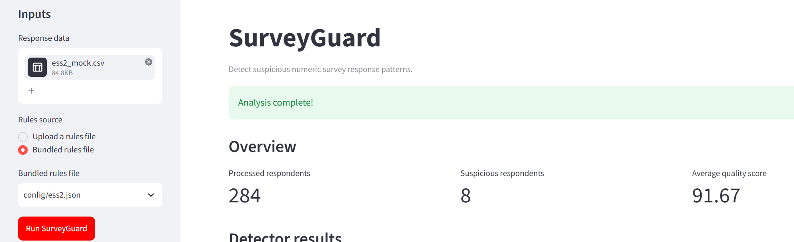

1 · For whom, and why
SurveyGuard
For social science students who must clean a survey before the analysis.
Why: some respondents click without reading, and nobody checks 1,498 rows by eye.
Free · runs on your own computer · ESS rounds 1–11 ready to use
ParliamentLegal systemPolicePoliticiansPartiesEU Parliament
1017
1023
1031
1044
↑ didn't read
1052
1068
1071
2 · The demo
Upload, run, read why.
- 1Upload the survey, pick the ESS rules, Run.
- 28 of 284 are suspicious.
- 3Every flag says why. Download the cleaned file.

Real SurveyGuard screen · synthetic sample
 Real SurveyGuard screen · synthetic sample · removed 8, kept 276
Real SurveyGuard screen · synthetic sample · removed 8, kept 276
On the real Hungarian ESS 2005 file: 1,498 respondents → 10 suspicious, 8.4 s. Screens: tests/fixtures/ess2_mock.csv, no real respondent data.
3 · Why it works
I checked it on real data, not the agent.
The textbook cut-off flagged most of my real respondents as outliers.
Textbook cut-off64.6%
Stricter, on ≥ 1 scale37.0%
… on ≥ 2 scales13.1%
… on ≥ 3 scales · chosen4.3%
… on ≥ 4 scales1.7%
Share of 1,498 real respondents flagged as Mahalanobis outliers, Hungarian ESS round 2. Measured and decided on 24 October 2026, PLANNING_LOG.md.
4 · What I learned
397 seconds became 8.4.
Faster only counts if the answer stays the same. The old slow code stayed in the tests, and the new one had to match it byte for byte.
Same file, same machine, same result: 1,498 · 10 · 96.22. Speed-up on 25 October, measured again on 8 November 2026, PLANNING_LOG.md.
5 · What's next
Not only ESS.
A plan, not built yet
Rules for other surveys.A rules file for another questionnaire, for example ISSP or your own thesis survey.
A rules editor in the app.Pick the scales and the contradictions on screen, without writing JSON by hand.
Check it on real data first.As with ESS: measure the cut-offs on the new survey before trusting them.
SurveyGuard
esst-prog2.github.io/surveyguard
Free · runs on your own computer · ESS rounds 1–11